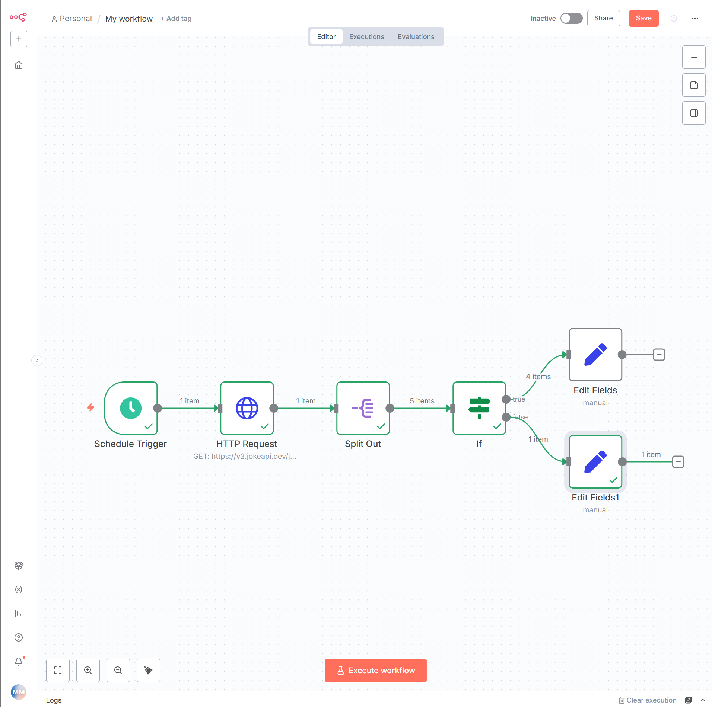

Resumen
Esta práctica introduce las herramientas que permiten a n8n ejecutar flujos de trabajo de forma autónoma, tomar decisiones y procesar conjuntos de datos. A lo largo de la sesión se construye un flujo de trabajo guiado que combina un Schedule Trigger, un HTTP Request, un Split Out y un IF, y se resuelven varios ejercicios de complejidad creciente para consolidar los conceptos.
-
Automatización de la Ejecución: El
Schedule Trigger. -
Lógica Condicional: El Nodo
IF. -
Manejo de Colecciones: APIs con Arrays y el Nodo
Split Out.
1. Objetivos de la Práctica
Esta segunda práctica profundiza en las capacidades de n8n, transitando desde la ejecución manual de flujos de trabajo simples hacia la creación de automatizaciones robustas, autónomas y con lógica de negocio. Se introducirán nodos fundamentales que permiten la ejecución desatendida, la toma de decisiones y el procesamiento de conjuntos de datos complejos, competencias esenciales para la integración de sistemas en el mundo real.
Al finalizar esta sesión, el estudiante habrá desarrollado las siguientes competencias:
-
Automatización de la Ejecución: Configurar y desplegar flujos de trabajo que se ejecutan de forma autónoma y periódica utilizando el
Schedule Trigger, comprendiendo la diferencia entre intervalos fijos y expresiones Cron. -
Manejo de Colecciones de Datos: Consumir y procesar respuestas de API que devuelven un array de objetos, un patrón de datos ubicuo en los servicios web modernos.
-
Transformación Estructural de Datos: Dominar el uso del nodo
Split Outpara descomponer un único ítem que contiene un array anidado en múltiples ítems procesables individualmente, un pilar fundamental para el procesamiento iterativo en n8n. -
Implementación de Lógica Condicional: Utilizar el nodo
IFpara crear bifurcaciones (branches) en el flujo de trabajo, permitiendo que la automatización tome diferentes caminos en función de los datos que procesa. -
Resolución de Problemas de Integración: Diseñar y construir flujos de trabajo de complejidad moderada que resuelven problemas prácticos, aplicando los conocimientos adquiridos en esta y la anterior práctica.
2. Fundamentos Teóricos
2.1. Automatización de la Ejecución: El Schedule Trigger
En la práctica anterior, utilizamos el Manual Trigger para tener un control total durante el desarrollo. Sin embargo, el verdadero poder de la automatización reside en la ejecución desatendida. El Schedule Trigger (también conocido como "Cron" o "Disparador Programado") es el nodo que habilita esta capacidad, iniciando un flujo de trabajo automáticamente en momentos predefinidos.
La configuración del Schedule Trigger ofrece varios modos de operación para adaptarse a distintas necesidades de negocio:
-
Intervalos Fijos: Permite programar ejecuciones cada X minutos, horas, días, semanas o meses. Es ideal para tareas recurrentes y sencillas, como "ejecutar cada hora".
-
Tiempos Específicos: Permite definir momentos exactos, como "todos los lunes y miércoles a las 9:00 AM".
-
Expresión Cron: Para un control granular y avanzado, se puede utilizar una expresión Cron. Cron es una notación estándar en sistemas UNIX para definir planificaciones complejas. Por ejemplo, la expresión
0 22 * * 1-5significa "a las 22:00 (10 PM) todos los días de lunes a viernes". Este modo es fundamental para alinearse con ventanas de mantenimiento o procesos de negocio específicos.
Un aspecto crítico al usar el Schedule Trigger es la zona horaria. El nodo se ejecutará según la zona horaria configurada en la instancia de n8n o, si se especifica, la zona horaria del flujo de trabajo individual. Una configuración incorrecta de la zona horaria es una fuente común de errores, provocando que las automatizaciones se ejecuten en momentos inesperados.
2.2. Lógica Condicional: El Nodo IF
Un flujo de trabajo lineal, que ejecuta siempre los mismos pasos, tiene una utilidad limitada. La verdadera inteligencia en la automatización surge de la capacidad de tomar decisiones. El nodo IF es la herramienta principal en n8n para introducir lógica condicional. Permite evaluar una o más condiciones y bifurcar el flujo de trabajo en dos caminos distintos: una salida true (verdadero) para los ítems que cumplen la condición y una salida false (falso) para los que no.
La configuración de un nodo IF se basa en la definición de una o más reglas de comparación. Cada regla consta de tres partes:
-
Valor 1: El dato que se quiere evaluar. Típicamente, es una expresión que extrae un valor del ítem actual, como
{{ $json.price }}. -
Operación: El tipo de comparación a realizar. n8n ofrece un amplio abanico de operaciones específicas para cada tipo de dato (texto, número, booleano, fecha, etc.). Por ejemplo, para números, se pueden usar operaciones como
is greater than(es mayor que) ois less than or equal to(es menor o igual que). -
Valor 2: El valor contra el que se compara el "Valor 1". Puede ser un valor fijo (ej.
100) o dinámico (otra expresión).
Cuando un flujo de trabajo tiene múltiples ítems de entrada, el nodo IF evalúa cada ítem de forma independiente, enviándolo por la rama true o false según corresponda. Esto permite, por ejemplo, procesar una lista de pedidos y enviar los pedidos de alto valor a un sistema de notificación y los de bajo valor a otro.
2.3. Manejo de Colecciones: APIs con Arrays y el Nodo Split Out
En la práctica anterior, la API de chistes devolvía un único objeto JSON. Sin embargo, es mucho más común que las APIs REST devuelvan una colección de datos, representada como un array de objetos. Por ejemplo, una petición a /products en una API de comercio electrónico devolverá un array donde cada objeto es un producto.
Cuando el nodo HTTP Request de n8n recibe una respuesta así, la encapsula dentro de un único ítem. La estructura de datos resultante sería:
[
{
"json": {
"products": [
{ "id": 1, "name": "Laptop" },
{ "id": 2, "name": "Mouse" },
{ "id": 3, "name": "Keyboard" }
]
}
}
]Esta estructura presenta un problema fundamental para el modelo de ejecución de n8n. Si conectamos esta salida a un nodo IF, este se ejecutará una sola vez, evaluando el objeto completo que contiene el array "products", en lugar de ejecutarse tres veces, una por cada producto.
Aquí es donde el nodo Split Out se vuelve indispensable. Su única función es resolver este problema: toma un ítem que contiene un array y lo descompone, generando múltiples ítems, uno por cada elemento del array.
Al configurar el Split Out, se le indica el campo que contiene el array a "desplegar" (en el ejemplo anterior, products). La salida del nodo Split Out sería:
[
{ "json": { "id": 1, "name": "Laptop" } },
{ "json": { "id": 2, "name": "Mouse" } },
{ "json": { "id": 3, "name": "Keyboard" } }
]Ahora, los datos están en el formato canónico que n8n espera: un array de ítems. Si esta salida se conecta a un nodo IF, este se ejecutará tres veces, permitiendo evaluar cada producto de forma individual. Dominar el patrón HTTP Request → Split Out es esencial para trabajar con la gran mayoría de las APIs del mundo real.
3. Desarrollo del Flujo de Trabajo Guiado
En esta sección, construiremos paso a paso un flujo de trabajo que se ejecuta cada minuto, obtiene una lista de 5 chistes de programación de la JokeAPI y los clasifica en "seguros" y "no seguros". Al finalizar, el flujo quedará activo y se ejecutará de forma autónoma.
3.1. Paso 1: Configurar el Schedule Trigger
-
Cree un nuevo flujo de trabajo. Elimine el nodo
Startinicial. -
Haga clic en "Add first step" y busque y seleccione el nodo
Schedule Trigger. -
Configure el disparador para que se ejecute a intervalos regulares para facilitar las pruebas:
-
Trigger Interval:
Minutes -
Minutes Between Triggers:
1 -
Trigger at Second:
0
-
-
Este nodo no necesita ser probado manualmente. Se activará una vez que el flujo de trabajo completo esté activo.
3.2. Paso 2: Obtener una Colección de Datos con HTTP Request
Ahora, vamos a pedir a JokeAPI que nos devuelva varios chistes a la vez. La documentación de la API indica que podemos usar el parámetro amount para este propósito.
-
Añada un nodo
HTTP Requestdespués delSchedule Trigger. -
Configure el nodo de la siguiente manera:
-
Request Method:
GET -
URL:
https://v2.jokeapi.dev/joke/Programming?type=single&amount=5
-
-
Ejecute el nodo haciendo clic en
Test step. -
Analice la salida en la vista
JSON. Observará que la respuesta es un único ítem. Dentro de la clavejsonde ese ítem, hay un booleanoerrory un array llamadojokes. Este array contiene 5 objetos, cada uno representando un chiste.
3.3. Paso 3: Procesar la Colección con Split Out
Como se explicó en la sección teórica, necesitamos convertir este único ítem con un array anidado en 5 ítems separados.
-
Añada un nodo
Split Outdespués delHTTP Request. -
Configure el nodo:
-
Field To Split Out: Escriba
jokes. n8n puede autocompletar el campo si los datos del nodo anterior están cargados. -
Include:
All Other Fields.
-
-
Ejecute el nodo
Split OutconTest step. -
Observe la nueva salida. Ahora, en lugar de un ítem, tiene 5 ítems. Cada ítem es un objeto
jsonque contiene las propiedades de un chiste individual (category,joke,safe, etc.). Ha transformado con éxito la estructura de datos para el procesamiento iterativo.
3.4. Paso 4: Implementar Lógica Condicional con IF
Ahora, vamos a usar un nodo IF para comprobar si cada chiste es "seguro" (la propiedad safe es true).
-
Añada un nodo
IFdespués delSplit Out. -
Configure la condición:
-
En la sección Conditions, haga clic en Add Condition.
-
Value 1: Haga clic en el engranaje, seleccione
Add Expressiony escriba{{ $json.safe }}. -
Operation:
Boolean→is true.
-
-
Ejecute el nodo
IFconTest step. -
En el panel de resultados, verá dos salidas:
trueyfalse. n8n mostrará cuántos de los 5 ítems de entrada han ido a cada rama.
3.5. Paso 5: Manejar las Ramas de Ejecución
Finalmente, añadiremos nodos Edit Fields (Set) a cada rama para ver claramente el resultado de nuestra clasificación.
-
En la rama
true:-
Haga clic en el
+de la salidatruedel nodoIF. -
Añada un nodo
Edit Fields (Set). -
Configure el nodo para crear un nuevo campo:
-
Name:
clasificacion -
Value:
Chiste seguro
-
-
-
En la rama
false:-
Haga clic en el
+de la salidafalsedel nodoIF. -
Añada otro nodo
Edit Fields (Set). -
Configure el nodo para crear el mismo campo pero con un valor diferente:
-
Name:
clasificacion -
Value:
Chiste NO seguro
-
-
-
Activar y Verificar:
-
Guarde el flujo de trabajo.
-
Active el flujo de trabajo usando el interruptor en la esquina superior derecha.
-
Espere un minuto. Vaya a la pestaña "Executions" en el panel izquierdo. Debería ver una ejecución exitosa. Al hacer clic en ella, podrá inspeccionar la ruta que siguió cada uno de los 5 chistes a través de las ramas del nodo
IF.
-

4. Ejercicios Propuestos
Para consolidar los conocimientos adquiridos, se proponen los siguientes ejercicios. Deberán ser entregados como archivos JSON exportados desde n8n.
4.1. Ejercicio 1: Filtrado por Categoría (Dificultad: Baja)
Objetivo: Modificar el flujo de trabajo guiado para que, en lugar de clasificar los chistes por si son seguros, los separe en dos categorías: "Programming" y "Misc".
Requisitos:
-
Modifique la URL del nodo
HTTP Requestpara que solicite chistes de las categorías "Programming" y "Misc" simultáneamente. (Pista: la documentación de JokeAPI explica cómo solicitar de múltiples categorías). -
Ajuste el nodo
IFpara que compruebe si el campocategoryes igual a "Programming". -
Los nodos
Edit Fields (Set)de las ramastrueyfalsedeben añadir un campo que refleje la categoría a la que pertenece cada chiste.
4.2. Ejercicio 2: Análisis de Productos (Dificultad: Media)
Objetivo: Crear un nuevo flujo de trabajo desde cero que analice productos de una API de comercio electrónico de prueba.
API a utilizar: Fake Store API (https://fakestoreapi.com/products)
Requisitos:
-
El flujo de trabajo debe iniciarse con un
Schedule Triggerque se ejecute una vez al día. -
Debe usar un
HTTP Requestpara obtener la lista completa de productos de la API. -
Utilice un
Split Outpara procesar cada producto individualmente. -
Implemente un nodo
IFpara separar los productos en dos grupos: aquellos cuyo precio (price) es superior a 100 y aquellos cuyo precio es 100 o inferior. -
Para los productos caros (rama
true), añada un nodoEdit Fields (Set)que cree un campoetiquetacon el valorProducto Premium. -
Para los productos económicos (rama
false), el campoetiquetadebe tener el valorProducto Estándar.
4.3. Ejercicio 3: Planificador de Festivos (Dificultad: Alta)
Objetivo: Crear un flujo de trabajo que obtenga los festivos de España para el año 2027, identifique cuáles son festivos nacionales y, solo para esos días, obtenga una actividad aleatoria para hacer.
APIs a utilizar:
* Nager.Date API para festivos: https://date.nager.at/api/v3/PublicHolidays/2025/ES
* Bored API para actividades: https://bored-api.appbrewery.com/random
Requisitos:
-
El flujo de trabajo debe iniciarse manually (
Manual Trigger). -
Obtener la lista de festivos de España para 2027.
-
Usar
Split Outpara procesar cada festivo. -
Usar un nodo
IFpara determinar si un festivo es nacional. (Pista: el campoglobalen la respuesta de la API es un booleano que indica esto). -
Solo para la rama
true(festivos nacionales):-
Añadir un segundo nodo
HTTP Requestque llame a la Bored API para obtener una actividad aleatoria. -
Añadir un nodo
Edit Fields (Set)para combinar la información del festivo con la actividad sugerida. La salida final para estos ítems debe contener, como mínimo, el nombre del festivo (name) y la actividad (activity).
-
-
La rama
false(festivos no nacionales) no debe realizar ninguna acción adicional.
4.4. Ejercicio 4: Alerta de Temperatura (Dificultad: Media)
Objetivo: Crear un flujo de trabajo que se ejecute de forma autónoma y compruebe la temperatura actual de una ciudad, generando una alerta cuando se supere un umbral. A diferencia de los ejercicios anteriores, aquí la API devuelve un único objeto (no una colección), por lo que no se necesita Split Out.
API a utilizar: Open-Meteo (gratuita, sin clave API): https://api.open-meteo.com/v1/forecast?latitude=40.4168&longitude=-3.7038¤t=temperature_2m&timezone=auto (coordenadas de Madrid).
Requisitos:
-
El flujo de trabajo debe iniciarse con un
Schedule Triggerque se ejecute cada hora. -
Use un
HTTP Requestpara obtener la temperatura actual. -
Implemente un nodo
IFque compruebe si la temperatura ({{ $json.current.temperature_2m }}) es mayor que30. -
En la rama
true, añada un nodoEdit Fields (Set)que cree un campoestadocon el valorAlerta: calor extremo. -
En la rama
false, el campoestadodebe tener el valorTemperatura normal.
Pregunta de reflexión: ¿Qué pasaría si la API devolviera null o un error en lugar de una temperatura? Investigue cómo haría que el nodo IF no fallara en ese caso.
4.5. Ejercicio 5: Clasificación de Usuarios por Edad (Dificultad: Media-Alta)
Objetivo: Crear un flujo de trabajo que obtenga una lista de usuarios ficticios, la procese individualmente y los clasifique en función de su edad. Este ejercicio pone el foco en el acceso a campos anidados dentro de cada ítem.
API a utilizar: Random User API (gratuita, sin clave API): https://randomuser.me/api/?results=10
Requisitos:
-
El flujo de trabajo debe iniciarse con un
Manual Trigger. -
Use un
HTTP Requestpara obtener 10 usuarios. Observe que la respuesta es un único ítem que contiene un arrayresultscon 10 objetos. -
Use un
Split Outsobre el camporesultspara obtener 10 ítems. -
Implemente un nodo
IFque compruebe si la edad del usuario es mayor que50. La edad está en un campo anidado: use la expresión{{ $json.dob.age }}como Valor 1 y la operaciónis greater thancon Valor 250. -
En la rama
true, añada un nodoEdit Fields (Set)que cree un campogrupocon el valorMayor de 50. -
En la rama
false, el campogrupodebe tener el valorMenor o igual de 50.
Pregunta de reflexión: Modifique el flujo para que, además de la edad, el campo grupo incluya también el nombre del usuario. Investigue cómo referenciar el nombre completo ({{ $json.name.first }} {{ $json.name.last }}) dentro del valor del campo.
5. Conclusiones y Avance de la Próxima Práctica
En esta sesión, hemos dado un salto cualitativo en la complejidad y utilidad de nuestros flujos de trabajo. La introducción del Schedule Trigger nos ha permitido crear automatizaciones autónomas. Los nodos IF y Split Out nos han dotado de las herramientas para implementar lógica de negocio y procesar conjuntos de datos del mundo real, dos de las tareas más comunes en cualquier proyecto de integración de sistemas.
En la próxima práctica, continuaremos expandiendo nuestro repertorio de herramientas lógicas y de procesamiento de datos, abordando los siguientes conceptos:
-
Lógica de Múltiples Ramas: Se presentará el nodo
Switch, una alternativa más potente alIFcuando se necesita evaluar múltiples condiciones y crear más de dos ramas de ejecución. -
Fusión de Ramas: Se introducirá el nodo
Merge, que permite volver a unir las diferentes ramas de ejecución creadas por nodos comoIFoSwitchen un único flujo de datos. -
Interacción con Hojas de Cálculo: Realizaremos nuestra primera integración con un servicio externo que requiere autenticación: Google Sheets. Aprenderemos a gestionar credenciales y a utilizar n8n para leer y escribir datos en una hoja de cálculo, una habilidad fundamental para la creación de informes y el almacenamiento de datos.